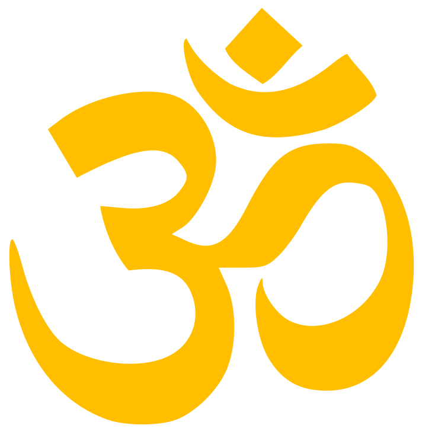
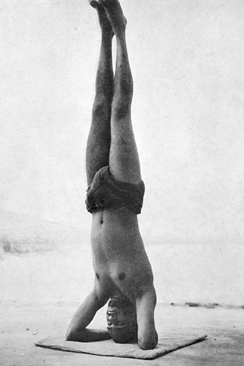

Known as the ‘king of the asanas’ for its remarkable benefits, the posture improves circulation, strengthens the respiratory system and heart, increases memory, concentration and intellectual capacity and promotes relaxation. The brain, spinal cord and sympathetic nervous system are vitalised and the senses sharpened. The pituitary and pineal glands are stimulated, revitalising the entire mind and body. The inversion relieves varicose veins and constipation, counteracts nervous disorders and anxiety, improves the quality of sleep and increases confidence.
Sarvangasana, meaning ‘all parts’ strengthens the entire body. The posture stimulates the thyroid gland regulating metabolism, protein synthesis, heart rate, blood pressure and calcium levels. The blood is purified and circulation improved, and the posture aids in the prevention of kidney disease, bone disease and muscle weakness. Varicose veins and constipation are relieved and mental sluggishness, depression and insomnia removed.
The Plough keeps the entire spine youthful by stretching the spinal muscles and opening up the spinal discs. It nourishes the spinal nerves and relieves and prevents back and neck arthritis and stiffness. The muscles of the back, shoulders and arms are strengthened and tension from the cervical region of the spine released. By massaging the internal organs, indigestion and constipation are relieved, the liver and spleen stimulated and obesity reduced.
The Fish strengthens and cleanses the respiratory system, increasing lung capacity, relieving asthma and bringing increased vitality to the entire system. Stiffness from the cervical, thoracic and lumbar regions of the back are removed correcting the hunched back/shoulder syndrome of modern-day living and the nerves of the neck and back are simultaneously toned. The parathyroid glands in the back of the neck which are responsible for calcium uptake are stimulated resulting in a stronger and more plastic skeletal system. Moods are regulated and emotions calmed.
The Sitting Forward Bend massages, stimulates and tones the entire digestive system, regulating peristalsis and increasing digestive power. The functions of the pancreas are regulated controlling blood sugar levels and carbohydrate metabolism. Disorders of the urogenital system are alleviated. All the muscles in the back of the body are stretched increasing flexibility in the hips. Excess weight in the waist area is reduced. The entire nervous system is invigorated and a feeling of surrender fostered.
The Cobra increases flexibility of the spine correcting curvature. The deep and superficial muscles of the back are strengthened and massaged, invigorating the nerves and muscles of the spine and relieving arthritis of the lower back and general lower back pain. The ovaries and uterus are toned, helping menstrual problems. The adrenal glands and kidneys are invigorated resulting in reduction of anxiety and stress.
The Locust relieves sluggish digestion, strengthens the abdominal walls, massages the pancreas, liver and kidneys and increases blood supply to the throat area. The muscles of the upper back, legs and arms are strengthened and lower back pain and sciatica are relieved. Flexibility in the cervical region of the back is increased. The posture strengthens will-power and increases alertness.
The Bow develops flexibility of the entire spine, invigorates the digestive organs and relieves constipation, dyspepsia and gastro-intestinal disorders. Rheumatism of the legs, knee joints and hands is prevented. The muscles of the back are massaged and the spine is kept elastic. Blood circulation is improved, abdominal fat removed and abdominal muscles strengthened. The respiratory system is strengthened and asthma relieved. Increases confidence.
The Half Spinal Twist provides a lateral stretch that relieves lower back pain, lumbago and rheumatism of the back and hips. The sympathetic nervous system is It toned and stimulated, the digestive organs massaged and the liver, large intestine, gall bladder, spleen and kidneys stimulated. The deep muscles of the back are strengthened and stooping shoulders, bent back and general poor posture are corrected.
The Crow strengthens and stretches the muscles of the arms, wrists, forearms and shoulders and increases breathing capacity. It increases the power of concentration, removes sluggishness and promotes mental and physical balance. The posture brings a feeling of lightness to body and mind.
The Hands to Feet Pose increases the length of the spine and spinal elasticity and tones the spinal nerves. The whole nervous system is invigorated and with the increased blood supply to the head, the brain stimulated. Abdominal fat is removed inducing a feeling of lightness. The muscles of the legs and back are stretched and strengthened and the sense of balance both physical and mental is improved.
The Triangle tones the spinal nerves and abdominal organs. Peristalsis of the digestive tract is increased. The pelvic area, legs and arms are strengthened, and hip flexibility promoted. Increased lateral movement to the spine is developed with each side of the body stretched and strengthened and balance improved. It is known to relieve nervous depression.